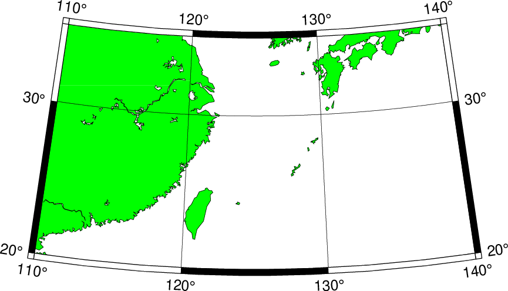
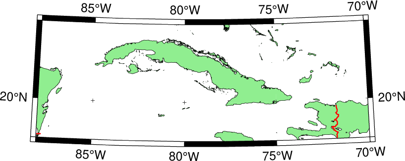
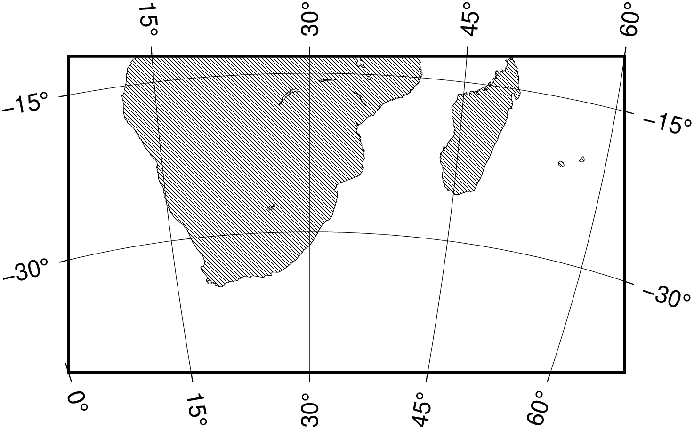
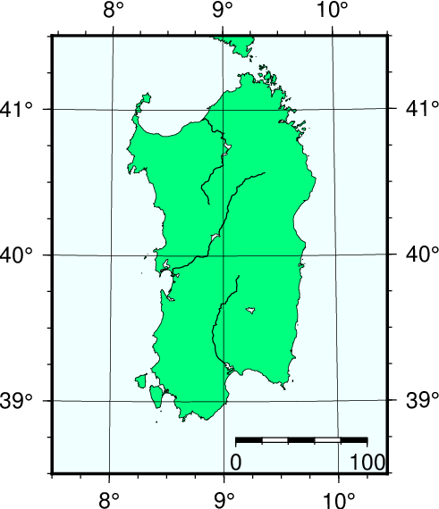
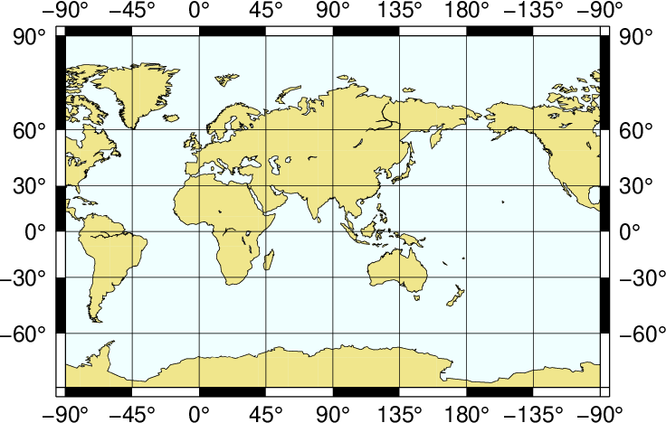
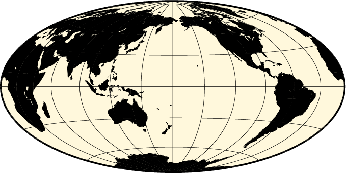
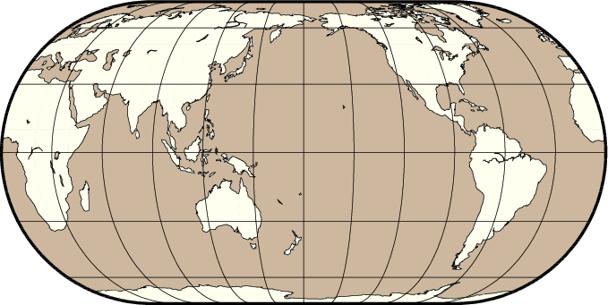
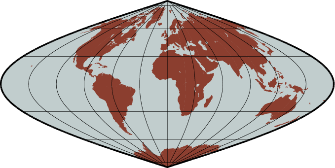

| Albers equal-area conic | Equidistant conic | Lambert conformal conic | (American) polyconic |
|---|---|---|---|
| []Albers conic equal-area projection | []Equidistant conic | [ ]Lambert conic conformal ]Lambert conic conformal | [ ](American) polyconic projection ](American) polyconic projection |
| Lambert Azimuthal Equal-Area (rect) | Lambert Azimuthal Equal-Area (hemi) | Polar Stereographic | Rectangular stereographic |
|---|---|---|---|
| []Rectangular map | [ ]Hemisphere map ]Hemisphere map | [ ]Polar Stereographic Map ]Polar Stereographic Map | [ ]Rectangular stereographic map ]Rectangular stereographic map |
| Perspective | Orthographic | Lambert conformal conic | Gnomonic |
|---|---|---|---|
[ ]Perspective ]Perspective | [ ]Orthographic ]Orthographic | [ ]Azimuthal Equidistant ]Azimuthal Equidistant | [ ]Gnomonic ]Gnomonic |
| Mercator | Transverse Mercator | Oblique Mercator | Cassini |
|---|---|---|---|
[ ]Mercator ]Mercator | [ | [ ]Oblique Mercator ]Oblique Mercator | []Cassini cylindrical |
| Cylindrical equidistant | Cylindrical equal-area | Miller Cylindrical | Cylindrical stereographic |
|---|---|---|---|
[ ]Cylindrical equidistant ]Cylindrical equidistant | [ ]Cylindrical equal-area ]Cylindrical equal-area | []Miller Cylindrical | [ ]Cylindrical stereographic ]Cylindrical stereographic |
| Hammer | Mollweide | Winkel Tripel | Robinson |
|---|---|---|---|
| []Hammer | [ ]Mollweide ]Mollweide | [ ]Winkel Tripel ]Winkel Tripel | [ ]Robinson ]Robinson |
| Eckert IV | Sinusoidal | Sinusoidal int | Van der Grinten |
|---|---|---|---|
| []Eckert IV and VI | []Sinusoidal | [ ]Sinusoidal ]Sinusoidal | [ ]Van der Grinten ]Van der Grinten |